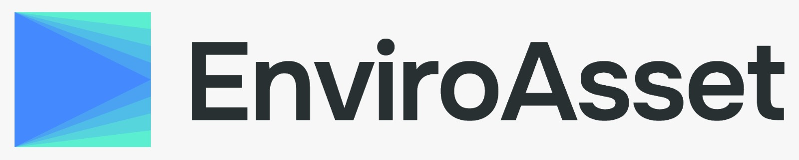

A Solução EnviroAsset
Plataforma Bimodal Inteligente
A união perfeita entre o Portal do Empreendedor e o Painel da Prefeitura, cobrindo o licenciamento de ponta a ponta através de módulos reais.



Plataforma completa de licenciamento ambiental digital. Mais arrecadação, menos burocracia, total transparência com a solução líder para Prefeituras.
O peso da burocracia trava a economia local e gera perda de arrecadação diária invisível à gestão.
A dependência do papel impede a escalabilidade. Protocolos manuais geram entropia informacional e atrasos críticos no atendimento ao cidadão.
Mais de 80% dos processos retrocedem. A informação paralisa em caixas de entrada sem supervisão algorítmica ou priorização inteligente pela falta de validação.
Decisões baseadas em planilhas desconectadas. Sem uma 'Fonte Única da Verdade', a gestão torna-se reativa, imprecisa e vulnerável.
A união perfeita entre o Portal do Empreendedor e o Painel da Prefeitura, cobrindo o licenciamento de ponta a ponta através de módulos reais.
A plataforma se financia rapidamente através do aumento sistemático da arrecadação e otimização imediata dos recursos públicos.
Digitalização 100% que traz clareza e previsibilidade para os processos de licenciamento e elimina imediatamente a volumetria de papel.
Menos retrabalho e extinção total de processos manuais. Aloque o tempo da equipe técnica onde realmente importa: em vistorias complexas e decisões ágeis.
Painel corporativo que entrega um rastro de auditoria inalterável e total transparência. Conformidade absoluta e comprovável com a Lei 15.190/2025.
O fim dos gargalos zera atrasos nos licenciamentos. Antecipe a arrecadação da Prefeitura tributária e traga novos recursos volumosos pro caixa ainda hoje.
Sua prefeitura modernizada em semanas, sem necessidade de infraestrutura de TI.
Mapeamento dos processos atuais e legislações aplicáveis. Auditoria completa da realidade municipal apontando gargalos exatos.
Adaptação total da plataforma à legislação municipal específica. Seu código de posturas traduzido em regras de sistema.
Capacitação intensiva e prática de todos os servidores envolvidos. Curva de aprendizado encurtada pela nossa interface intuitiva.
Operação 100% digital liberada para gestores e munícipes. O papel desaparece no dia 1 e a produtividade da equipe dispara.
Agende uma demonstração personalizada da plataforma EnviroAsset Licenciamento e descubra como aumentar sua arrecadação ainda este ano.
Atende rigorosamente à LC 140/2011, PNMA e resoluções vigentes.
Prazos e obrigações para digitalização e integração Sinima ativa.